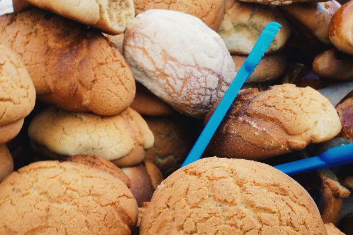

Datos Personales
Hola, mi nombre completo es Brayan Antonio de la Torre Lopez
Naci el 21 de Noviembre de 1997 en Ocotlan, Jalisco en el hospital San Vicente aproximadamente a las 11:45 pm
Actualmente vivo en Poncitlan, Jalisco
Galeria
Mi pueblo es conocido por el tradicional pan llamado "Picon" que se realiza de diferentes maneras y sabores
